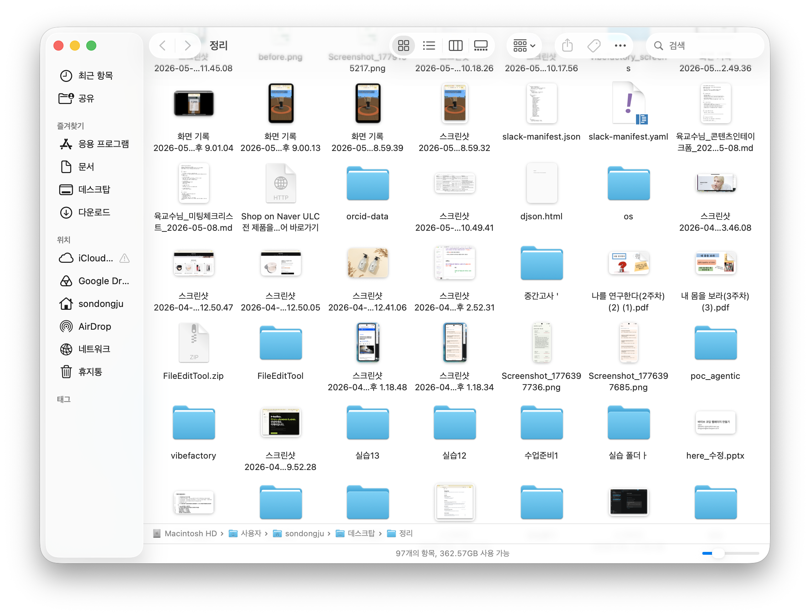
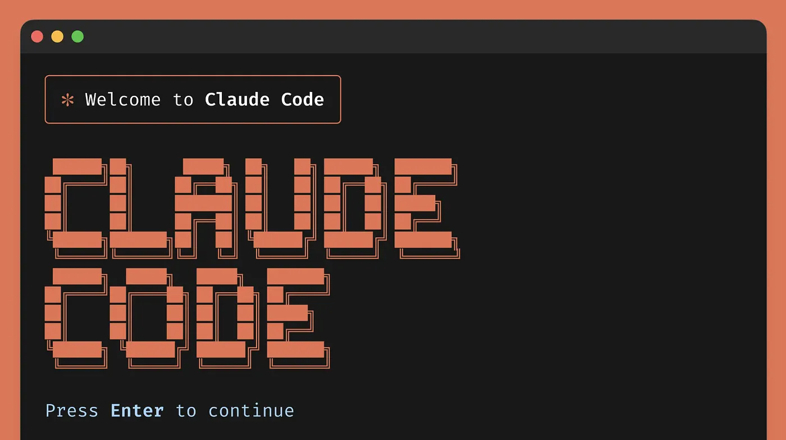
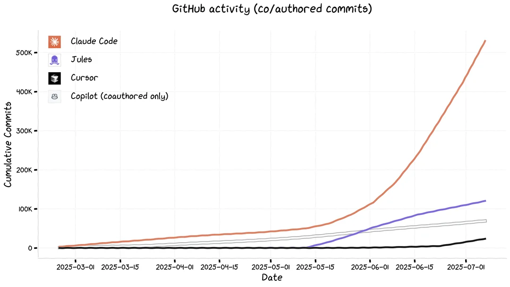
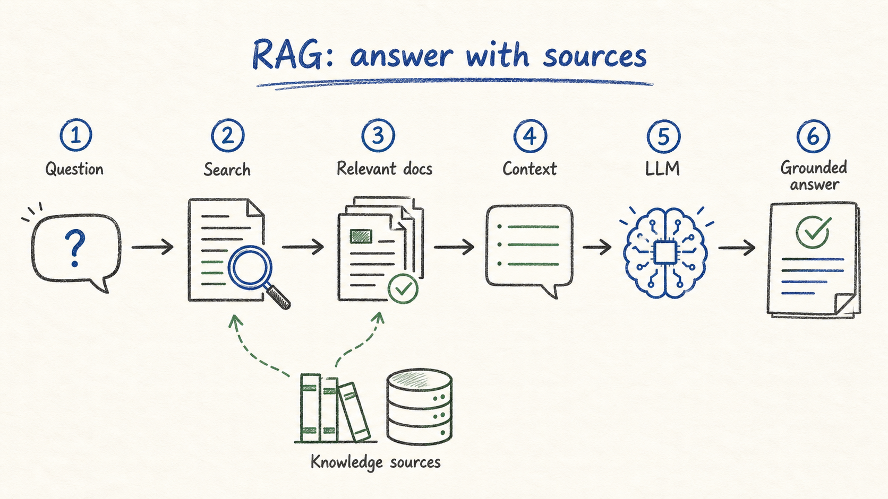

Anthropic이 만든 공식 AI 코딩 도구입니다. 터미널에서 실행되며, 사용자의 컴퓨터 안에서 직접 파일을 읽고 명령을 실행합니다.
단순히 채팅으로 답변만 받는 것이 아니라, 실제로 작업을 수행하는 AI입니다.

GitHub 공개 저장소 활동 기준으로, 클로드 코드의 사용량이 다른 AI 코딩 도구를 압도하고 있습니다.

* 아직 구독이 없으신 경우 claude.ai에서 무료로 계정 만드시고 오늘 실습만 함께 따라오셔도 괜찮습니다. 설치는 강의 중에 함께 진행합니다.
클로드코드가 사용할 수 있는 도구들입니다. 필요한 상황에 맞춰 알아서 골라 사용합니다.
파일을 바꾸거나 명령을 실행하기 전에는 이런 확인 화면이 뜹니다.
정리할 폴더가 다운로드 폴더이므로, 그곳으로 먼저 이동한 다음 클로드를 실행합니다.
경로가 길거나 헷갈리면, Finder/탐색기에서 폴더를 터미널 창으로 드래그하면 경로가 자동으로 입력됩니다.
먼저 클로드에게 폴더의 현재 상태를 파악하게 합니다.
* 파란 박스의 > 기호는 프롬프트 표시일 뿐입니다. > 뒤 문장만 복사해서 붙여넣으시면 됩니다.
규모가 크거나 위험한 작업을 수행하기 전에, 계획을 먼저 세우는 모드입니다. 실제 실행은 일어나지 않습니다.
계획이 마음에 들면 ESC를 눌러 일반 모드로 돌아옵니다. 같은 프롬프트를 한 번 더 입력하면 실제 작업이 시작됩니다.
작업이 진행되는 동안 파일을 수정할 때마다 권한 확인 창이 뜹니다. 내용을 확인하고 승인하시면 됩니다.
Finder나 탐색기로 폴더를 열어 직접 확인합니다. 결과가 마음에 들지 않으면 클로드에게 되돌리도록 요청합니다.
논문 업무는 “읽기”보다 옮기기·비교하기·형식 맞추기에서 시간이 많이 듭니다.
처음부터 요약을 시키기보다, PDF가 어떤 구조인지 먼저 읽게 합니다.
쌓인 PDF를 다루기 전에, 파일명부터 일괄로 정돈합니다. 메타데이터(저자·연도·제목)를 읽어 일관된 형식으로 재명명하면 이후 작업이 훨씬 수월해집니다.
논문에서 반복해서 옮기는 데이터는 파일로 뽑아두는 게 좋습니다.
Retrieval-Augmented Generation — AI가 머릿속 지식만으로 답하는 것이 아니라, 자료를 직접 참고하면서 답하는 방식입니다.

예) 논문 5편이 든 폴더를 던지면, 지어내지 않고 원문 페이지에서 근거를 찾아 답을 구성합니다.
여러 편을 한 번에 처리할 때는 “무엇을 비교할지” 열 이름을 먼저 정해줍니다.
논문 작업은 그럴듯한 요약보다 원문에서 확인 가능한 결과가 중요합니다.
슬라이드 다시 보기 · djson.me/vibecoding-workshop/week2/